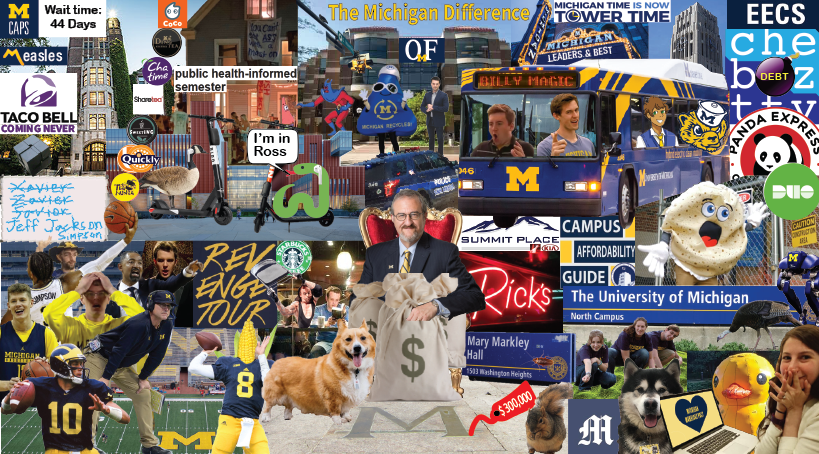

UMich Memes for Wolverteens is the University of Michigan's premier meme page with over 27,000 members. Established in 2017, the page provides an outlet for students to share their thoughts, feelings, and frustrations about anything umich in meme form and engage with others over shared emotions.
On August 29, 2020, The Umich Memes for Wolverteens Cover Photo Contest was announced.
My roommate, Justin Kirsh, and I were interested and quickly decided on creating a collage with various memes throughout the page's brief history. We brainstormed what we wanted included and further researched previously popular memes. After that, we had to find and download memes or other images to represent them. We used Paint 3D, Photoshop, and Adobe Illustrator to modify images and compile them into one large canvas. The final result is shown below:
We didn't expect much, but to our surprise we won. Our collage became the cover photo until January 15, 2022 after news broke of then president, Mark Schlissel's embarassing firing.